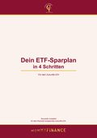

ETF-Sparplan für Anfängerinnen: So legst du wirklich los
Du hast genug verglichen. Du hast Videos geschaut und Listen gelesen, und das Geld liegt trotzdem noch auf dem Konto. Hier steht, worauf es beim ersten ETF-Sparplan wirklich ankommt und was du getrost weglassen kannst.
Was ein ETF eigentlich ist
ETF steht für Exchange Traded Fund, also für einen börsengehandelten Fonds. Ein breit gestreuter Welt-ETF hält Aktien, also Unternehmensanteile, an hunderten bis über tausend der größten Firmen weltweit. Du kaufst also nicht einen einzelnen Anteil, sondern den ganzen Korb.
Das ist der entscheidende Punkt. Steigt der Markt insgesamt, steigt dein ETF mit. Gerät ein einzelnes Unternehmen in Schieflage, fangen die anderen das ab. Du bist nicht darauf angewiesen, den richtigen Gewinner vorherzusagen, denn du hast sie alle.
Drei Fragen, bevor du überhaupt suchst
Bevor du den ersten Fondsnamen googelst, brauchst du Klarheit über dich selbst. Diese drei Antworten bestimmen alles Weitere.
- Wie lange kannst du das Geld liegen lassen? Auch ein breit gestreuter ETF schwankt im Wert, weil die Unternehmen darin an der Börse gehandelt werden. Über kurze Zeiträume kann er deshalb im Minus stehen. Unter fünf Jahren ist er dafür der falsche Ort. Ab zehn Jahren aufwärts hatten Rückschläge historisch genug Zeit, sich wieder auszugleichen, und genau dort liegt seine Stärke.
- Wie reagierst du, wenn dein Depot 20 Prozent im Minus steht? Kannst du ruhig schlafen, oder willst du sofort verkaufen? Deine ehrliche Antwort bestimmt, wie viel Schwankung zu dir passt.
- Welchen Betrag kannst du monatlich entbehren, ohne dass es wehtut? Bei vielen Anbietern geht ein Sparplan ab 25 Euro, bei manchen bereits ab einem Euro.
Worauf du bei der Auswahl achtest
- Die Kostenquote Sie heißt TER und steht für Total Expense Ratio, also die jährlichen Gesamtkosten in Prozent. Unter 0,25 Prozent ist gut, unter 0,20 Prozent sehr gut. Zum Vergleich, aktiv gemanagte Fonds liegen oft bei 1,5 bis 2 Prozent.
- Die Nachbildungsmethode Physisch replizierende ETFs kaufen die enthaltenen Aktien, also die Unternehmensanteile, wirklich. Das ist die transparentere Variante und für den Anfang die ruhigere Wahl.
- Ausschüttend oder thesaurierend Thesaurierend bedeutet, dass Erträge automatisch wieder angelegt werden. Für den langfristigen Aufbau ist das praktisch, weil der Zinseszins ohne dein Zutun arbeitet.
- Das Fondsvolumen Ab etwa 100 Millionen Euro gilt ein ETF als etabliert. Sehr kleine Fonds werden häufiger wieder geschlossen, und das kann dich Geld kosten. Wird ein Fonds aufgelöst, werden deine Anteile verkauft und ausgezahlt. Steuerlich zählt das wie ein normaler Verkauf, auf deine bis dahin aufgelaufenen Kursgewinne fällt also Abgeltungsteuer an, sobald dein Sparerpauschbetrag ausgeschöpft ist. Wird der Fonds stattdessen mit einem anderen verschmolzen, bleibt es oft steuerfrei, aber eben nicht immer. Ein ausreichend großer Fonds erspart dir diese Frage von vornherein.
- Das Depot dahinter Direktbanken und Neobroker sind meist deutlich günstiger als das Depot der Hausbank. Achte auf keine Depotgebühren, niedrige oder keine Sparplankosten und eine App, mit der du zurechtkommst.
Warum deine Bank dir davon selten erzählt
Eine Bank ist kein gemeinnütziger Verein. Sie verdient, wenn sie Produkte verkauft, an denen sie mitverdient. Aktiv gemanagte Fonds bringen ihr einen Ausgabeaufschlag von oft 3 bis 5 Prozent beim Kauf und dazu jedes Jahr eine laufende Vergütung. Ein ETF bringt ihr davon nichts. Deshalb taucht er im Beratungsgespräch häufig gar nicht erst auf.
Das macht deine Beraterin oder deinen Berater nicht zu schlechten Menschen. Es macht die Empfehlung nur interessengebunden. Fünf Prozent Ausgabeaufschlag auf 10.000 Euro heißen, dass 500 Euro weg sind, bevor dein Geld einen einzigen Tag für dich gearbeitet hat.
Und dann einfach laufen lassen
Wenn der Sparplan steht, ist deine Arbeit getan. Er kauft jeden Monat automatisch, auch wenn die Kurse fallen. Gerade dann bekommst du für denselben Betrag mehr Anteile. Leg den Abbuchungstag kurz nach dem Gehaltseingang, dann ist das Geld weg, bevor du es ausgeben kannst. Einmal im Jahr schaust du kurz, ob der Betrag noch zu deiner Lebenssituation passt.
Drei Leitfäden zum Mitnehmen
Zum Ausdrucken, zum Abhaken, zum immer wieder Nachschlagen. Du bekommst nicht nur diese drei, sondern den Zugang zur kompletten Bibliothek mit allen kostenfreien Leitfäden, auch zu allen Themen, die noch dazukommen.
-

Dein ETF-Sparplan in 4 Schritten Mein persönlicher Leitfaden mit der Tabelle, die zeigt, was aus 50, 100 oder 200 Euro monatlich über 10, 20 und 30 Jahre werden kann. - In wenigen Schritten deinen ersten ETF wählen und loslegen Die Auswahlkriterien im Detail, mit einer Checkliste, die du abhaken kannst, bis der Sparplan wirklich läuft.
- In 5 Schritten von fremden Interessen zu deiner eigenen Geldentscheidung Wie das Geschäftsmodell hinter der Bankberatung funktioniert und welche vier Fragen dich im Gespräch souverän machen.
Du hast schon ein Depot und bist dir unsicher, was drin liegt?
Trag deine Positionen ein, und ich schaue persönlich darauf. Du erfährst, wo sich deine Fonds überschneiden, welche Unternehmen bei dir am schwersten wiegen und wie sich dein Geld auf Regionen und Branchen verteilt. In Euro und in Prozent.
Zur kostenfreien Depot-Durchleuchtung
Du möchtest das nicht allein entscheiden?
Ich bin Cindy, ehemalige Bankerin, langjährige Investorin, dreifache Mama und Finanztrainerin. In der Bank habe ich gesehen, welche Wege man Kundinnen lieber nicht zeigt. Wenn du magst, schauen wir gemeinsam, was zu deiner Situation passt.
Zum Finanzcheck-BeratungsgesprächKostenfrei und unverbindlich. Ich begleite nur wenige Mamas gleichzeitig, deshalb sind die Plätze begrenzt.